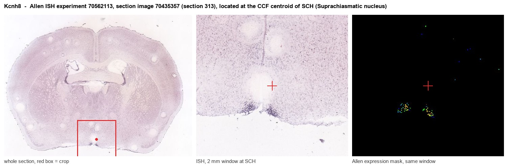
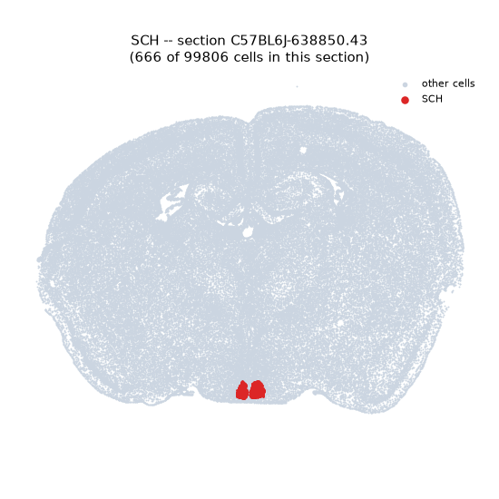
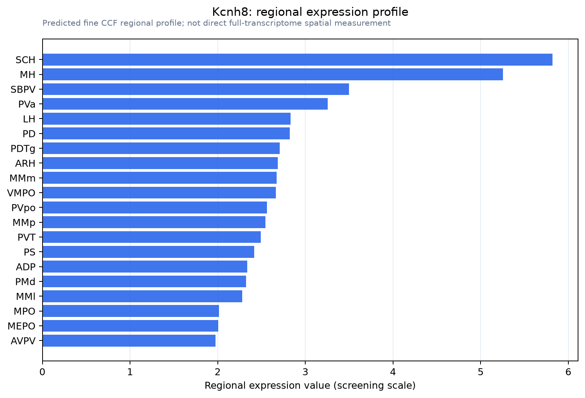

Kcnh8
Voltage-gated delayed rectifier potassium channel KCNH8 (Ether-a-go-go-like potassium channel 3) (ELK channel 3) (ELK3) (Potassium voltage-gated channel subfamily H member 8) (Voltage-gated potassium
Spatial tier: RESTRICTED · Class: ION_CHANNEL · Top region: SCH (Suprachiasmatic nucleus) · Positive regions: 26/554
Function in SCH: evidence, prediction, innovation
- Gene function
- Kcnh8 encodes Kv12.1 (ELK3), a subthreshold-activating delayed-rectifier potassium channel of the EAG/KCNH family. Because it opens near the resting membrane potential rather than during the spike, it acts as a brake on spontaneous firing and sets how readily a neuron fires repetitively, rather than repolarising individual action potentials.
- Region function
- The suprachiasmatic nucleus above the optic chiasm is the master circadian pacemaker; it receives retinal input via the retinohypothalamic tract and imposes roughly 24-hour rhythms on sleep-wake, hormone release and body temperature through a large day-night swing in the spontaneous firing rate of its neurons.
- Published in this region
- direct Direct. Hermanstyne 2023 recorded SCN neurons in slices from Kcnh8-null (Kv12.1-/-) and Kcnh3-null (Kv12.2-/-) mice and found that night-time repetitive firing rates were elevated while daytime rates were unchanged, so the hallmark day-night difference in SCN firing was eliminated; in vivo shRNA knockdown of Kv12.1 in adult SCN reproduced the effect. The bioRxiv preprint (Hermanstyne 2023) reports the same result. This identifies Kv12-encoded channels as the long-sought subthreshold potassium conductance driving the circadian firing switch, complementing earlier work on A-type and afterhyperpolarisation currents in SCN (Itri 2010; Jackson 2004).
- Predicted function
- Prediction: Kv12.1 is the night-time brake on SCN pacemaking, so restricting its deletion to Vip- or Avp-expressing SCN neurons should selectively raise night firing in that subpopulation, flatten the electrical rhythm, and reduce behavioural rhythm amplitude or alter free-running period and re-entrainment speed in constant darkness. Conversely, a Kv12 opener applied to SCN should deepen night-time quiescence and increase rhythm amplitude. Because Kv12.1 and Kv12.2 knockouts give the same phenotype, the two subunits probably co-assemble, predicting that a double knockout will be no worse than either single.
- Innovation
- ★★☆☆☆ 2/5 This gene-region pair has already been nailed down functionally, leaving cell-type-specific and behavioural consequences as the remaining gap.
- Tools
- Kcnh8 (Kv12.1-/-) and Kcnh3 (Kv12.2-/-) knockout mice plus shRNA constructs validated in adult SCN; SCN cell types accessible with Vip-IRES-Cre (JAX 010908) and Avp-IRES2-Cre (JAX 023530); PER2::LUC reporter mice for rhythm readout; no selective small-molecule Kv12.1 blocker in common use.
- References
Direct evidence located at the region

Allen ISH experiment 70562113, section image 70435357 (section 313): the section that contains the CCF centroid of Suprachiasmatic nucleus according to the Allen image-to-atlas alignment (reference_to_image), with a 2 mm window around that point. Left: whole section, red box = window. Middle: ISH signal. Right: Allen's expression-mask view of the same window. open this image in the Allen viewer
Direct spatial evidence

Regional expression figure

Predicted WMB × fine-CCF profile; not direct full-transcriptome spatial measurement.
Spatial profile
Evidence and specificity
- Evidence status
- PREDICTED_FINE
- Direct sources
- None; predicted localization only
- Exclusive threshold
- 12 positive regions out of 554
- Spatial specificity
- 0.315
- Top-region fraction
- 0.061
- Filter status
- PASS
Interpretation limits
- Cell-type-to-region projection is imputed expression, not direct spatial measurement.
- Adult reference atlases do not establish stability across age, sex, strain, state, or disease.
- Transcript abundance does not guarantee protein abundance or genetic-tool performance.